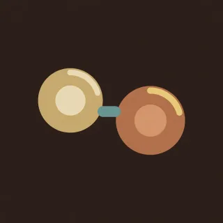
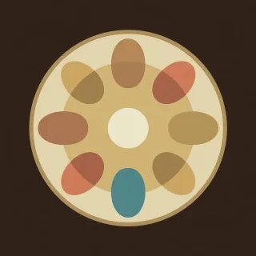
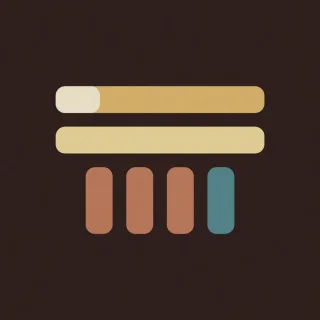
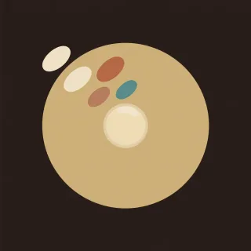
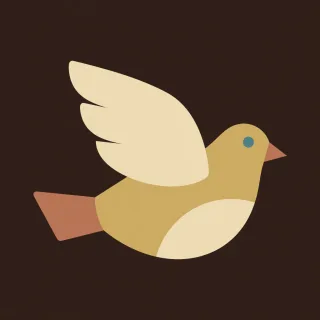
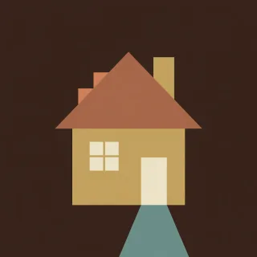
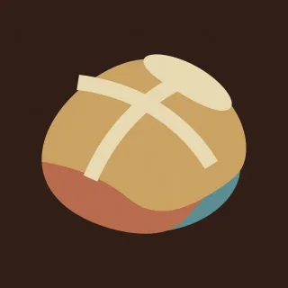
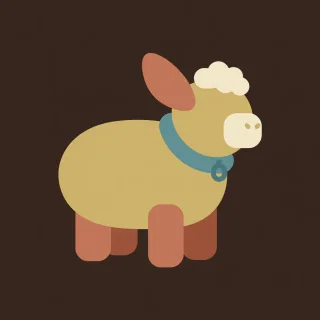
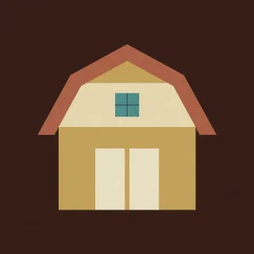
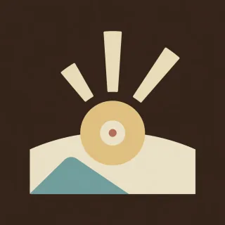

The whole library
Handpan pieces, songs and drills for D Kurd
63 patterns for the Gear4music DISC 10-note D Kurd handpan. Each page has the number notation bar by bar, the tempo and time signature, the notes it uses, and a link to play or learn it in the browser.
The pan's notes are D3, A3, B♭3, C4, D4, E4, F4, G4, A4, C5, with the ding on D3 and A at 440 Hz. Melodies from other keys are moved so that every note lands on these ten.
Hands 4
Short hand-alternation drills that teach where the notes sit and which hand reaches them.
- Bottom crossLow A, B-flat, and the ding. The hands cross the bottom of the pan.76 BPM · 4/4 · 2 bars
 The ding answersThe right hand walks. The ding answers every note.72 BPM · 4/4 · 4 bars
The ding answersThe right hand walks. The ding answers every note.72 BPM · 4/4 · 4 bars Left, then rightEach note on the left is answered from the right.74 BPM · 4/4 · 2 bars
Left, then rightEach note on the left is answered from the right.74 BPM · 4/4 · 2 bars- The other DD in two places, A in two places, hands still trading.70 BPM · 4/4 · 2 bars
Chords 4
Two-note chord drills on the fields that ring together on a D Kurd handpan.
 Ding and low AThe home sound. Both notes together, then each one alone.64 BPM · 4/4 · 2 bars
Ding and low AThe home sound. Both notes together, then each one alone.64 BPM · 4/4 · 2 bars
F with the low AThe minor third. F in the left hand, low A in the right.68 BPM · 4/4 · 2 bars- G over DG with the higher D, then G with the ding.66 BPM · 4/4 · 2 bars
- High A and EThe bright pair up high, then the hands come down.72 BPM · 4/4 · 2 bars
Grooves 4
Repeating rhythmic loops to build steady time and a relaxed strike.

Kurd loopEight notes. The right hand stays on the low A.86 BPM · 4/4 · 2 bars- Eight-note rollA roll with no rest. Hands trade on every note.92 BPM · 4/4 · 2 bars

Long, then shortA held pair, then four quick notes.84 BPM · 4/4 · 2 bars
Down to the dingTwo bars on the low A, then a walk down to it.88 BPM · 4/4 · 4 bars
Songs 9
Riffs and melodies from well-known songs, moved onto the pan's ten notes.
 In the EndLinkin Park's piano riff moved down to D minor, over D minor, C and B-flat.105 BPM · 4/4 · 39 bars
In the EndLinkin Park's piano riff moved down to D minor, over D minor, C and B-flat.105 BPM · 4/4 · 39 bars Amazing GraceThe pentatonic hymn in F major, every note on the pan, counted in six.48 BPM · 6/8 · 18 bars
Amazing GraceThe pentatonic hymn in F major, every note on the pan, counted in six.48 BPM · 6/8 · 18 bars Knockin' on Heaven's DoorDylan's four chords in F major with the sung line on 3, 4 and 5.70 BPM · 4/4 · 33 bars
Knockin' on Heaven's DoorDylan's four chords in F major with the sung line on 3, 4 and 5.70 BPM · 4/4 · 33 bars Soltan-e Ghalbha (Chorus)Rohani's chorus in D minor: the 4 5 6 8 climb and the rocking top, with C standing in for the missing B-flat.96 BPM · 4/4 · 16 bars
Soltan-e Ghalbha (Chorus)Rohani's chorus in D minor: the 4 5 6 8 climb and the rocking top, with C standing in for the missing B-flat.96 BPM · 4/4 · 16 bars House of the Rising SunThe Animals' 6/8 arpeggio and melody in A minor, with the ding as the D minor bass.76 BPM · 6/8 · 42 bars
House of the Rising SunThe Animals' 6/8 arpeggio and melody in A minor, with the ding as the D minor bass.76 BPM · 6/8 · 42 bars
HallelujahLeonard Cohen's verse and chorus in F major, the pan's relative major, in 6/8.56 BPM · 6/8 · 31 bars Gole SangamRohani's stepwise minor melody in D minor, verse, verse a step higher, chorus, verse.60 BPM · 6/8 · 36 bars
Gole SangamRohani's stepwise minor melody in D minor, verse, verse a step higher, chorus, verse.60 BPM · 6/8 · 36 bars Seven Nation ArmyThe White Stripes riff in D minor: 4 4 6 4 3 2 1, then the ding joins for the chorus.124 BPM · 4/4 · 16 bars
Seven Nation ArmyThe White Stripes riff in D minor: 4 4 6 4 3 2 1, then the ding joins for the chorus.124 BPM · 4/4 · 16 bars Nothing Else Matters (Intro)Metallica's intro as the picking part in A minor, for playing with a guitarist on capo 5.48 BPM · 6/8 · 28 bars
Nothing Else Matters (Intro)Metallica's intro as the picking part in A minor, for playing with a guitarist on capo 5.48 BPM · 6/8 · 28 bars
Traditional 18
Public-domain melodies, carols and folk tunes arranged for the pan's ten notes.
 Frère JacquesPublic-domain melody from the Tonalics letter notes, as written, on 3, 4, 5, 6, 7, 8.107 BPM · 4/4 · 8 bars
Frère JacquesPublic-domain melody from the Tonalics letter notes, as written, on 3, 4, 5, 6, 7, 8.107 BPM · 4/4 · 8 bars
Going Home (New World Largo)Public-domain melody from the Tonalics letter notes, as written, on 3, 4, 5, 7.66 BPM · 4/4 · 8 bars
Hot Cross BunsPublic-domain melody from the Tonalics letter notes, as written, on 3, 4, 5.96 BPM · 4/4 · 4 bars Jingle BellsPublic-domain melody from the Tonalics letter notes, as written, on 3, 4, 5, 6, 7.133 BPM · 4/4 · 16 bars
Jingle BellsPublic-domain melody from the Tonalics letter notes, as written, on 3, 4, 5, 6, 7.133 BPM · 4/4 · 16 bars Jolly Old Saint NicholasPublic-domain melody from the Tonalics letter notes, moved down a fifth, on 3, 4, 5, 6, 7, 8.101 BPM · 4/4 · 8 bars
Jolly Old Saint NicholasPublic-domain melody from the Tonalics letter notes, moved down a fifth, on 3, 4, 5, 6, 7, 8.101 BPM · 4/4 · 8 bars- Lightly RowPublic-domain melody from the Tonalics letter notes, as written, on 3, 4, 5, 6, 7.120 BPM · 4/4 · 16 bars
- London BridgePublic-domain melody from the Tonalics letter notes, as written, on 3, 4, 5, 6, 7, 8.109 BPM · 4/4 · 8 bars

Mary Had a Little LambPublic-domain melody from the Tonalics letter notes, as written, on 3, 4, 5, 7.106 BPM · 4/4 · 8 bars- Ode to JoyPublic-domain melody from the Tonalics letter notes, as written, on 3, 4, 5, 6, 7.113 BPM · 4/4 · 8 bars

Old MacDonaldPublic-domain melody from the Tonalics letter notes, as written, on 3, 4, 5, 7, 8.116 BPM · 4/4 · 8 bars- Sakura SakuraPublic-domain melody from the Tonalics letter notes, moved down a fifth, on 2, 4, 5, 6.78 BPM · 4/4 · 9 bars
- Twinkle Twinkle Little StarPublic-domain melody from the Tonalics letter notes, as written, on 3, 4, 5, 6, 7, 8.99 BPM · 4/4 · 12 bars
 Up on the HousetopPublic-domain melody from the Tonalics letter notes, as written, on 3, 4, 5, 6, 7, 8.128 BPM · 4/4 · 16 bars
Up on the HousetopPublic-domain melody from the Tonalics letter notes, as written, on 3, 4, 5, 6, 7, 8.128 BPM · 4/4 · 16 bars- When the Saints Go Marching InPublic-domain melody from the Tonalics letter notes, as written, on 3, 4, 5, 6, 7.124 BPM · 4/4 · 15 bars
 Good King WenceslasThe Piae Cantiones spring carol in F major, every quarter on the pan, C on 9 for the high B-flat.112 BPM · 4/4 · 17 bars
Good King WenceslasThe Piae Cantiones spring carol in F major, every quarter on the pan, C on 9 for the high B-flat.112 BPM · 4/4 · 17 bars O Come, O Come, EmmanuelThe fifteenth-century chant tune in D minor, the pan's own key, with C on 9 for the high B-flat.84 BPM · 4/4 · 20 bars
O Come, O Come, EmmanuelThe fifteenth-century chant tune in D minor, the pan's own key, with C on 9 for the high B-flat.84 BPM · 4/4 · 20 bars- We Three KingsHopkins' carol in 6/8, the verse in D minor and the refrain in F major, C on 9 for the high B-flat.66 BPM · 6/8 · 17 bars
 In the Bleak MidwinterHolst's hymn tune Cranham in C major on 1 to 8, with one low B moved up to D.72 BPM · 4/4 · 16 bars
In the Bleak MidwinterHolst's hymn tune Cranham in C major on 1 to 8, with one low B moved up to D.72 BPM · 4/4 · 16 bars
GPT-6 Astra 2
Long original pieces written with the GPT-6 Astra model for this instrument.
 Alamut at Dusk
Alamut at Dusk Sunburst Parade
Sunburst ParadePieces 22
Original pieces with named sections, written for this instrument.
 First lightA slow round over four bass notes, then a tune on top of it.72 BPM · 4/4 · 24 bars
First lightA slow round over four bass notes, then a tune on top of it.72 BPM · 4/4 · 24 bars Three three twoThe handpan groove. Notes land in threes and a two, with taks between them.92 BPM · 4/4 · 29 bars
Three three twoThe handpan groove. Notes land in threes and a two, with taks between them.92 BPM · 4/4 · 29 bars- TideSix to the bar. A wave that rises and falls over each bass note.56 BPM · 6/8 · 37 bars
 Seven stepsSeven to the bar, felt as two, two, three.100 BPM · 7/8 · 29 bars
Seven stepsSeven to the bar, felt as two, two, three.100 BPM · 7/8 · 29 bars Slow rainA slow one. Two notes struck together, then a falling line.60 BPM · 4/4 · 21 bars
Slow rainA slow one. Two notes struck together, then a falling line.60 BPM · 4/4 · 21 bars- Night rideFast and even. One hand keeps a quiet pulse, the other plays the tune.104 BPM · 4/4 · 25 bars
 Call and answerThe bottom of the pan asks. The top of the pan answers.84 BPM · 4/4 · 21 bars
Call and answerThe bottom of the pan asks. The top of the pan answers.84 BPM · 4/4 · 21 bars The long way homeThe long one. A slow opening, a theme, a groove, a peak, and the theme again.80 BPM · 4/4 · 39 bars
The long way homeThe long one. A slow opening, a theme, a groove, a peak, and the theme again.80 BPM · 4/4 · 39 bars
Bright morningA tune you can hum. It asks in four bars, answers in four, then climbs.72 BPM · 4/4 · 26 bars CradleA lullaby in six. Bass on 1, a soft chord on 4, and a slow tune between.66 BPM · 6/8 · 30 bars
CradleA lullaby in six. Bass on 1, a soft chord on 4, and a slow tune between.66 BPM · 6/8 · 30 bars Half timeA slow backbeat. Bass on 1, a loud D on 3, soft notes between.88 BPM · 4/4 · 34 bars
Half timeA slow backbeat. Bass on 1, a loud D on 3, soft notes between.88 BPM · 4/4 · 34 bars LopeLong, short. Each beat is a hit, a gap, and a late hit, so the whole thing limps.96 BPM · 4/4 · 30 bars
LopeLong, short. Each beat is a hit, a gap, and a late hit, so the whole thing limps.96 BPM · 4/4 · 30 bars UphillSeven to the bar, felt as three, two, two. The bass climbs from the ding to C.96 BPM · 7/8 · 35 bars
UphillSeven to the bar, felt as three, two, two. The bass climbs from the ding to C.96 BPM · 7/8 · 35 bars- Whisper and shoutThe same four bars three times: soft, normal, loud. A piece about control.80 BPM · 4/4 · 25 bars
 Two sidesA round between the two sides of the pan. Each side has a figure, then they lock in.84 BPM · 4/4 · 22 bars
Two sidesA round between the two sides of the pan. Each side has a figure, then they lock in.84 BPM · 4/4 · 22 bars One dayA day on the pan. Quiet at dawn, a walk, a run up the scale, bright at the top, dusk.88 BPM · 4/4 · 32 bars
One dayA day on the pan. Quiet at dawn, a walk, a run up the scale, bright at the top, dusk.88 BPM · 4/4 · 32 bars WildfireA long one that catches, burns, dies to embers, and roars at the end.108 BPM · 4/4 · 51 bars
WildfireA long one that catches, burns, dies to embers, and roars at the end.108 BPM · 4/4 · 51 bars Storm frontSix to the bar and it never stops rolling. Wind, rain, thunder, the eye, and thunder again.80 BPM · 6/8 · 60 bars
Storm frontSix to the bar and it never stops rolling. Wind, rain, thunder, the eye, and thunder again.80 BPM · 6/8 · 60 bars CaravanSeven to the bar at walking speed. The low A and B-flat sit a half step apart and give it its colour.126 BPM · 7/8 · 56 bars
CaravanSeven to the bar at walking speed. The low A and B-flat sit a half step apart and give it its colour.126 BPM · 7/8 · 56 bars RunawayThe fast one. Eighths at a run, a hard stop, a breath, and a sprint to the end.138 BPM · 4/4 · 64 bars
RunawayThe fast one. Eighths at a run, a hard stop, a breath, and a sprint to the end.138 BPM · 4/4 · 64 bars ClockworkThrees laid over fours. The ding keeps the beat and the tune lands every third sixteenth.96 BPM · 4/4 · 56 bars
ClockworkThrees laid over fours. The ding keeps the beat and the tune lands every third sixteenth.96 BPM · 4/4 · 56 bars Last trainA train that leaves slowly, finds its rhythm, and runs flat out before it pulls in.116 BPM · 4/4 · 56 bars
Last trainA train that leaves slowly, finds its rhythm, and runs flat out before it pulls in.116 BPM · 4/4 · 56 bars